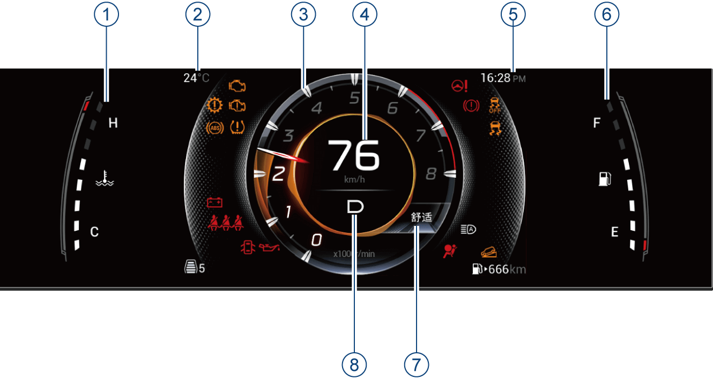
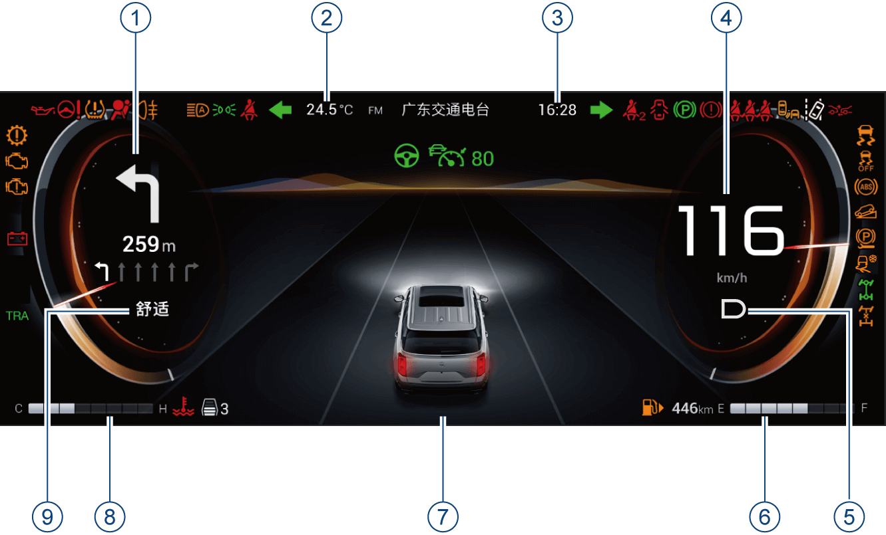

整车电源在“ON”挡位，通过短按方向盘左侧“VIEW”按键，进行仪表主题设置。
– 当“ACC”巡航功能未激活时，按“VIEW”按键只在仪表有机主题、导航主题、AVDC主题间自由切换；只有在打开ACC/ICA的时候才会自动跳转到仪表智驾主题。
– 当“ACC”功能激活后，无法从仪表智驾主题中切出。

① 发动机冷却液温度表
② 车外温度显示
③ 发动机转速表
④ 车速表
⑤ 时间显示
⑥ 燃油表
⑦ 驾驶模式
⑧ 挡位显示
–当切换驾驶模式时，组合仪表根据不同的驾驶模式切换颜色。
–7英寸组合仪表主题包括“经典主题和AVDC主题”，图示以“经典主题”为例，仅供参考，请以实车为准。

① 仪表左侧显示屏
② 车外温度显示
③ 时间显示
④ 车速表
⑤ 挡位显示
⑥ 燃油表
⑦ 仪表中间显示屏
⑧ 发动机冷却液温度表
⑨ 驾驶模式
–当切换驾驶模式时，组合仪表根据不同的驾驶模式切换颜色。
–12.3英寸组合仪表主题包括“有机主题”、“导航主题”、“AVDC主题”、“智驾主题”，图示以“智驾主题”为例，仅供参考，请以实车为准。
发动机转速表用于指示发动机当前转速，单位为x1000r/min。
6000~8000r/min为发动机高负荷区域，可能会导致发动机自我保护而断油丧失动力，应避免车辆工作在此区域。
车速表用于指示车辆当前车速，单位为km/h，指示范围0～240km/h。
为了行车安全，请严格遵守交通规则，禁止超速行驶。
发动机冷却液温度表（水温表）用于指示发动机冷却液当前温度。
–指示范围C~H，其中“C”表示低温度，“H”表示高温度。
发动机启动后，水温表根据不同温度点亮相应的格数，发动机的工作温度会根据气温与发动机负荷，产生各种变化。
–水温表偏高的情况：炎热天气长途爬坡时；高速行车后降低车速或停车时；在交通繁忙地区，使用空调系统并让发动机长时间怠速运转时；拖有尾车时等。
–水温表偏低的情况：寒冷天气冷启动后热车未充分时；寒冷天气暖风挡位/风量较大时等。
燃油表用于指示车辆油箱内当前剩余燃油量。
–指示范围E~F，其中“E”表示燃油箱空，“F”表示燃油箱加满，根据燃油箱剩余燃油量点亮相应的格数。
–没有格子或仅第1格格子点亮时，表示燃油箱内燃油不足，组合仪表的 指示灯黄色闪烁，文字提醒“燃油低”，提醒驾驶员燃油不足，请尽快加油。
指示灯黄色闪烁，文字提醒“燃油低”，提醒驾驶员燃油不足，请尽快加油。
– 根据接收到的信号显示P、R、N、D等车辆当前挡位信息。
– 根据接收到的信号显示车辆当前使用的驾驶模式。
– 显示当前车辆外面的环境温度。
– 指示车辆当前已经行驶的里程数，在行车信息界面中显示。
– 显示范围0km~999999km。
显示信息包括：行车信息、车辆状态、G值图、油门灵敏度、油耗趋势*、ADAS、报警中心、导航信息、电话信息、音响娱乐信息。
若组合仪表显示屏异常显示时，为安全考虑应立即停车，并联系广汽传祺特约店进行检修。

整车电源在“ON”挡位，通过短按方向盘左侧“VIEW”按键，进行仪表主题设置。
– 当“ACC”巡航功能未激活时，按“VIEW”按键只在仪表有机主题、导航主题、AVDC主题间自由切换；只有在打开ACC/ICA的时候才会自动跳转到仪表智驾主题。
– 当“ACC”功能激活后，无法从仪表智驾主题中切出。

整车电源在“ON”挡位时，上拨/下拨方向盘左侧“OK”按键，切换至行车信息界面。
– 行车信息界面包含：本次行驶、累计行驶和总里程。
• 本次行驶：指车辆打开启动开关后单次行驶内的行车信息（本次行驶里程/平均油耗/行驶时间），该车辆参数不可以重新设置。
• 累计行驶：指车辆自从上次复位之后的行车信息（累计行驶里程/平均油耗/行驶时间），该车辆参数可长按“OK”按键清零。
• 总里程：指车辆的行驶里程，不可以重新设置。

– 包含轮胎压力、温度，车门状态，安全带报警信息。
– 当胎压异常，车门打开或未系安全带时，该页面可以自动弹出。
– 整车电源在“ON”挡位，通过方向盘左侧“OK”按键上拨/下拨查看车辆状态。
– 图示以12.3英寸组合仪表有机主题为例，仅供参考，请以实车为准。

–实时显示G值加速度，X轴代表横向加速度，Y轴代表纵向加速度。
–当有导航显示时，G值图会跟着缩小。
– 通过方向盘左侧“VIEW”按键切换至仪表AVDC主题，即可查看。
– 图示为12.3英寸组合仪表AVDC主题内容，仅供参考，请以实车为准。

– 显示当前的油门灵敏度、油门踏板深度、制动深度。
– 左半圆代表制动深度，右半圆代表油门踏板加速度。
– 按压方向盘左侧“OK”按键进入设置界面，油门灵敏度分5个等级，通过上/下拨动方向盘左侧“OK”按键，调节油门等级（智驾主题除外）。
– 图示以12.3英寸组合仪表AVDC主题为例，仅供参考，请以实车为准。

显示最近50km的油耗趋势和平均油耗（AVDC主题和智驾主题仪表除外）。
– 按压方向盘左侧“VIEW”按键选择仪表有机主题或导航主题，上/下拨动方向盘左侧“OK”按键查看。
– 图示以12.3英寸组合仪表有机主题为例，仅供参考，请以实车为准。
ADAS

当ADAS功能开启时，显示相应的ADAS信息，包括本车和左右车道线信息，交叉路口、后方来车等信息。
–通过打开ACC/ICA功能自动跳转至仪表智驾主题，进行查看。
–图示以12.3英寸组合仪表智驾主题为例，仅供参考，请以实车为准。
报警中心

报警中心一般以文字或者图片信息来显示车辆当前的状态，驾驶员应时常留意是否有报警信息。
– 若整车状态无异常，不显示报警信息。
– 若车辆出现故障或者激活/关闭某些功能时，组合仪表会在屏幕上方弹出相应的文字或者图片信息提示驾驶员当前车辆的状态。
– 报警信息弹出后，通过按压方向盘左侧“OK”按键确认后，报警信息会进入到报警中心。
– 如果存在多个报警信息在报警中心，报警中心会显示相应的数字和当前显示的是第几个文字报警。
图示以12.3英寸组合仪表有机主题为示例，7英寸组合仪表可参考，请以实车为准。
导航信息

整车电源在“ON”挡位时，通过方向盘左侧“OK”按键切换至导航信息界面（导航主题除外）。
– 当音响系统导航功能开启，根据音响系统的导航功能状态而显示相应的导航信息。
图示以12.3英寸组合仪表有机主题为示例，仅供参考，请以实车为准。
电话信息

– 当音响系统连接手机蓝牙后，有通话时，电话信息在组合仪表显示屏的右下方显示。
– 当使用B-CALL*或E-CALL*时，电话信息显示B-CALL*或E-CALL*状态。
图示以12.3英寸组合仪表有机主题为示例，7英寸组合仪表可参考，请以实车为准。

– 整车电源在“ON”挡位时，通过按方向盘左侧“OK”按键切换到音响娱乐信息界面。当音响系统没有开启时，音响娱乐信息界面会显示“暂无音源”提示。

– 当音响系统开启时，音响娱乐信息显示音响系统当前的播放信息。
– 以12.3英寸组合仪表有机主题为示例，7英寸组合仪表可参考。
– 当音响系统通过CarLife/CarPlay使用手机互联功能时，不会显示CarLife/CarPlay相应的娱乐功能界面。
仪表设置

整车电源在“ON”挡位，车速为零时，通过音响系统“设置→屏幕设定→仪表”，对以下功能进行设置：
– 仪表音量
– 累计行驶
– 油耗/里程
– 温度单位
– 压强单位
– 仪表背光
– 后排安全带提醒
– 默认设置
仪表设置详细信息请参见系统设置章节。
— 页面到底了 —